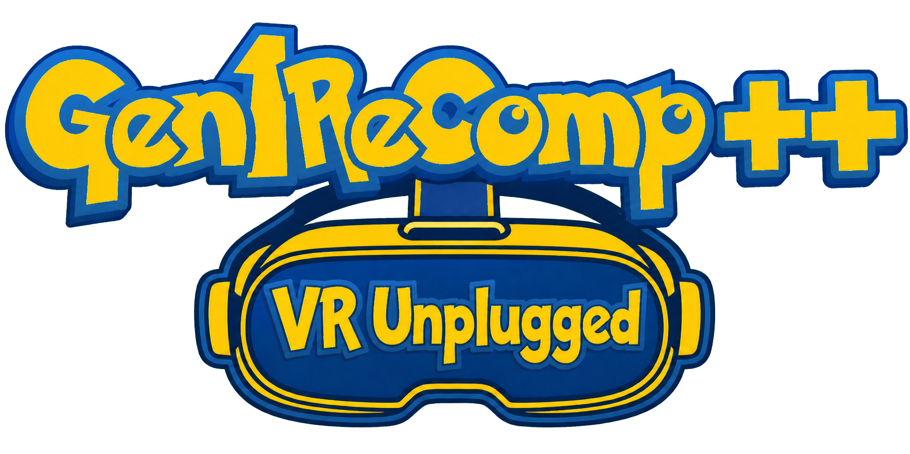

Quest-native foundation
Native ARM64 Android packaging, stereo OpenXR rendering, 6DoF head tracking, and clean launcher-to-game handoff.
Standalone Meta Quest public beta

A Quest-native launcher, OpenXR runtime, tracked controls, spatial UI, and a curated voxel mod stack built into one cohesive first-person VR overhaul of Red, Blue, and Yellow.
Bring your own legally obtained supported ROM. ROMs and commercial game assets are not included.
The overhaul
The goal is a complete standalone VR presentation while preserving the underlying game, saves, and the work of each mod author.
Native ARM64 Android packaging, stereo OpenXR rendering, 6DoF head tracking, and clean launcher-to-game handoff.
Touch controls for movement and menus, room-anchored launcher panels, tracked UI, comfort options, and recentering.
First-person environments, visible wild Pokémon, followers, physical catching experiments, weather, and enhanced battle presentation.
Import supported ROMs, saves, and Quest-compatible mod ZIPs from the launcher without bundling protected game content.
Recommended experience
Mods stay separate so their original authors keep ownership and each part can be tested, updated, or disabled independently.
Stable baseline
Voxel world rendering, VR camera, lighting, water, and battles.
Quest tested
Interiors, ceilings, caves, skyline, weather, foliage, and stages.
Integrated
Expanded content, visual sources, and more life across the overworld.
Candidate stack
Visible encounters, followers, held Poké Ball interaction, Stadium models, and ROM-derived sprite bridges.
Install only packages marked Quest compatible. Desktop packages may not include the memory, input, OpenXR, or rendering changes needed on-headset.
Development snapshot
Planning estimates include real-headset validation, not only code completion, and will move as testing finds new work.
Longer lifecycle, controller sleep, handoff, transition, and quit stress testing.
Additional performance, rollback, world, and battle presentation gates.
Final low-poly behavior, physical catching, and provider headset passes.
Memory, heat, transition stalls, long sessions, and intermittent startup work.
Architecture, cache ownership, asset audit, and a clean voxel bridge.
Immersive rendering, interactions, and compatible mod integration remain ahead.
Real Quest 3 measurements
These are development measurements, not final targets. Improving the full mod stack without sacrificing clarity is one of the largest remaining tasks.
Build it with us
There is one project repository for the game, launcher, APK releases, issues, and roadmap. This site has a separate lightweight source repository only for GitHub Pages publishing; it is not a second game project.